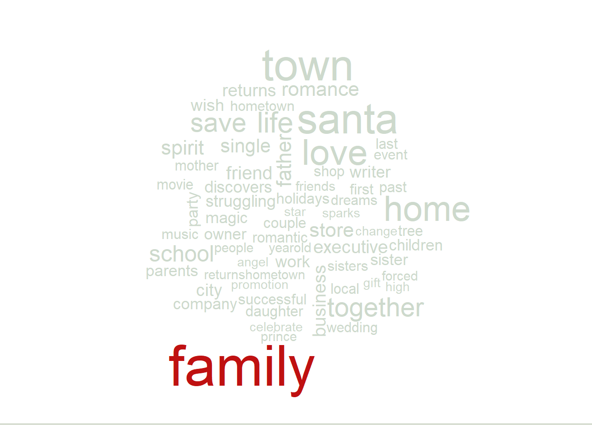
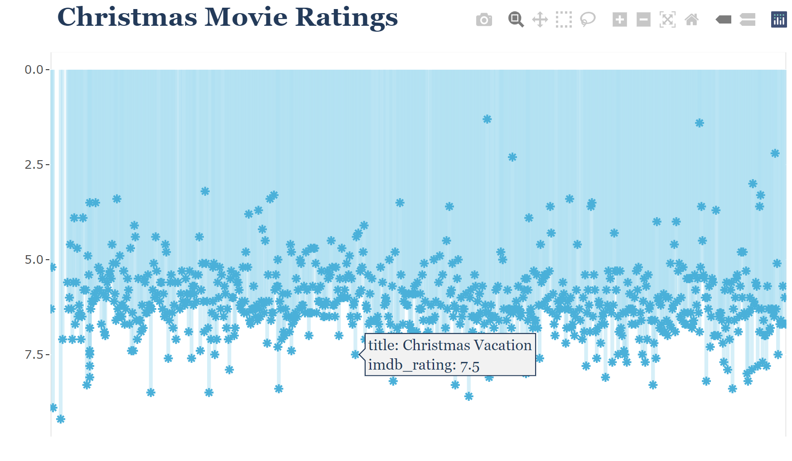

Note: The following post reflects my own views, not ncecessarily the views of my employer.
There has been a lot of hype about ChatGPT lately and how it is “disrupting” the way we work. For those who do not know, ChatGPT is an AI chatbot that you can interact with via natural human language in a “conversational” form on a variety of topics.
I’ve seen a lot of discussion on it, suggesting that it can spit out results and even complete code snippets in various programming languages.
I am a person who values learning and trying things myself. Coding in multiple languages {R} and {Python} has been a treat for me in the past year. There is something rewarding about coming up with several lines of code to create beautiful and customized data visualizations that are tailored to a dataset and showcase an eye for design. For me, it is a journey to go from initial vision to reality.
Because of that, I was disheartened when I heard that an AI chatbot could come up with supposedly all the code to do what I described almost instantly. It seemed like the “journey” was able to be completely automated, and therefore, I felt the sense of accomplishment wouldn’t be there.
I hesitantly decided to try ChatGPT for myself, and doing so completely changed my thinking on it.
Last year around this time, I had started a project on analyzing Christmas movies from IMDB. I had originally started the project in Tableau. Unfortunately, I got distracted with something else after encountering a few frustrations. To be fair, it was nothing against Tableau; I didn’t have significant time to explore the possibilities. I moved on and then decided to try the project again, this time with {R}.
I knew the challenge ahead of me from experience. I wanted to extract “themes” from all the movies to see what was popular across all of them in the dataset. However, if you simply grab all the “most popular” words from all the movie descriptions in the dataset, you’ll come up with popular words you did not intend to get: “the”, “an”, “and”, etc.
Knowing this, I then went to ChatGPT to ask specific questions on how to read all the descriptions from a column in a dataframe and to filter out or remove word articles and punctuation.
This specific question is different from what I’ve seen people say about ChatGPT. What I received in response from ChatGPT was not this “instant correct answer.” Yes, it may have been a correct answer, and it was instant, but that didn’t mean it immediately worked for my use case and dataset.
Datasets need to be cleansed. They have errors, missing values, incorrect datatypes, and are otherwise not formatted as a final product. ChatGPT will provide a starting point, and then when you experience errors in the code, you go back again in the form of a conversation to troubleshoot what to do next. In that way, that in itself I believe is part of the new “journey,” a part I enjoyed and described at the beginning of this post. It automated the “search” part to be a lot more streamlined. Previously I would internet surf to about 3 or 4 tutorial/forum sites to do the same thing, and I sometimes came up empty handed. ChatGPT completely changes that.
With that in mind, I think ChatGPT may eventually reduce traffic to the amount of “starting point” content out there because ChatGPT provides starter code syntax and a short explanation instantly. There will likely be many exceptions to this and this is just my first impression. It’s almost like having access to the documentation sites for the code packages themselves. Keyword: almost.
That said, I believe documentation sites for various code packages are still critical at the time of this writing, and here is why: Various packages for data visualization involve various arguments and parameters that can be specified. There is a nuance to it in that the code to do it in each package may vary in terms of where you put certain syntax. In addition, it may vary over time in different versions of packages.
One of many examples is in specifying a set of colors for a data visualization with code. ChatGPT provided an exact code snippet that showed where to place it for a given data visualization. And guess what? It did not work. I frequently go back to ChatGPT with the error messages I receive from trying code snippets it provides. There have been times where ChatGPT contradicts its earlier statements and says that a certain parameter isn’t available for what I’m doing. I can see how it would come up with educated guesses that end up being incorrect, so I am not upset at this. It still speeds up the “journey” because the same thing would have happened from searching several forums and trying things.
Here are my takeaways from my experience (so far).
1. Asking good questions is important.
Asking good questions is one aspect of how powerful communication is in everyday life. I think this in itself is a critical skill to master even though it is underrated at times. There were things I asked of ChatGPT that I didn’t know a lot about myself before that point. However, I was specific with describing what I did know in asking the questions. As a result, ChatGPT was able to pick up on what I was talking about even when I wasn’t using all the right technical terms. I focused on asking questions on specific smaller chunks at a time. That way, if there was an incorrect output for some reason, I could troubleshoot in a more isolated way. This also helped with point #2.
2. Learning is still a rewarding journey.
Because I hyper focused on specific aspects of my goals when interacting with ChatGPT, I learned a lot about what I did not know previously. As a result, I have a far greater understanding of what all my code does. For future projects, I can now use that experience as my own base to build from. ChatGPT actually did not remove a rewarding learning opportunity and a sense of accomplishment for me, which was my anxiety inducing hamster wheel fear. It accelerated and elevated it. This helped with point #3.
3. Creativity is not automated; it’s enhanced.
Just about every single code related question I have asked ChatGPT has resulted in something along the lines of “Yes, it is possible to. . .” Aside from the occasional incorrect code outputs that weren’t possible, I felt as though I entered a positive creative zone when I was working with ChatGPT. Asking specific questions about syntax, clarifying intent when errors came up, and more got me to applicable solutions much faster than traditional means. When that part of the process is more streamlined, I can notice patterns faster than I usually do. And when that happens, I get excited. My mind then wanders to “What else is possible? Why stop there?” I’m convinced that entering a creative zone does not happen easily if the initial steps are riddled with frustration. There are things that have frustrated me for months and were then resolved within hours, thanks to ChatGPT. Okay, technically they probably would have been resolved within days or a week in a more realistic busy schedule. However, part of the accelerated timeline had to do with feeling so inspired to keep going almost nonstop due to noticeable reduction of obstacles.
4. “Output” is not the be all end all.
If you think about it, much of school education focuses on output. Businesses involve outputs as well. A lot of talk about ChatGPT focuses on its instantaneous output. That’s probably a worry for those who think AI will take over jobs or think that AI will make it easy for people to cheat things. I think those things are true from an “output focused” mindset. However, output is only one aspect of success. There is a process leading up to it that may be harder to measure but is also important. You need to have a process to generate the output efficiently, the critical thinking to know if something is on course or not, the creativity to try new things, the insights that you can back up with your personal experience, and the skills to communicate why it even matters to an audience. It’s well known in the data science community that the data does not speak for itself. We need to clearly display insights with design best practices and draw out a story for the audience. And depending on the data visualization’s purpose, it may come with the hope of influencing an action. While ChatGPT may provide instantaneous output and will improve over time, it does not replace your personal experience and perspective where output played just a part. I don’t see this as a tool for instant gratification, even though it appears that way. Those who use it as a tool and take it several notches beyond are those who will experience the most success and reward. It’s for this reason that reading about someone’s perspective, process, and final project is so interesting. Put in another way, ChatGPT is similar to what my kids see in playing Minecraft. They create worlds based on a “seed” input of their choice, and then they build upon the “output.” They aren’t sad the world was created. They are excited to explore the possibilities with their input. I choose to see ChatGPT in the same way.
5. You can draw a line, or you can be open to adding any tool to the toolbox.
As I mentioned near the beginning of this post, I was hesitant to use ChatGPT and was even disheartened about it. But if you think about it, we are all drawing lines somewhere when it comes to automation and technology. If you think you are “cheating” the learning process by copying and pasting output from ChatGPT, you do realize that those code libraries you are bringing in are “shortcuts” in themselves, right? The same argument could be made with anything that makes your workflow and/or life easier. My recommendation in this area is to make sure you are learning as you go and then put your own personal spin on it. Ask specific questions and get clarifications on what things mean. Ask how to do things beyond the typical expectation. Build upon and share credit. Don’t just copy the first output and move on. I think that would be cheating…. cheating yourself out of a great opportunity, that is. Use the time you saved to come up with something beyond the original goal. It would be interesting to see how an original goal was met and then expanded upon due to how skilled someone may be at their “process” and the way they interacted with the tools.
At the time of this writing, I have used ChatGPT on and off for probably a week and in various capacities. I’ve had a very positive experience with it despite my initial hesitation. You can find my interactive Christmas Movie data visualizations created with the help of ChatGPT here. The code is also available on GitHub. Below are just screenshots of the outputs.

